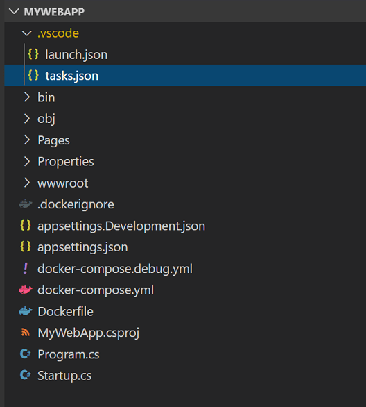
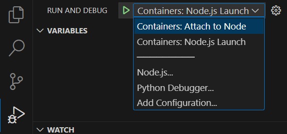
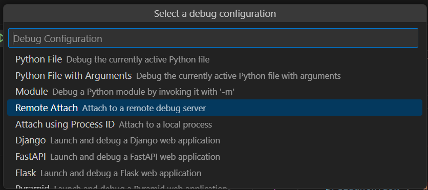
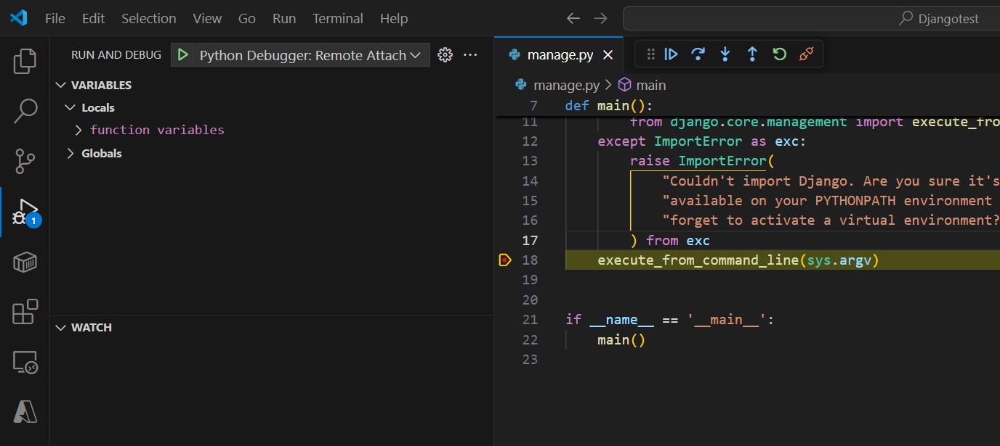
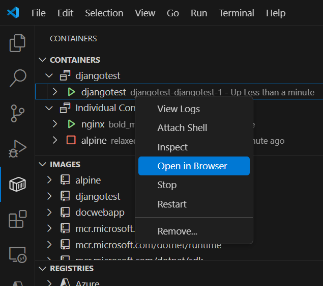
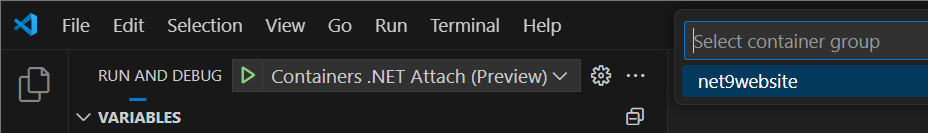
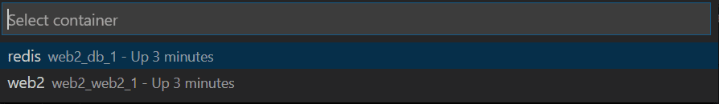
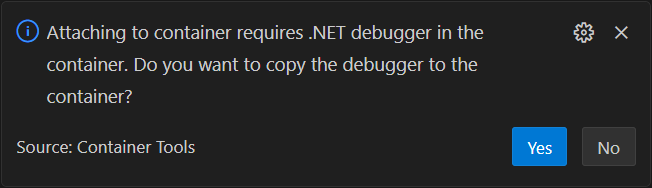
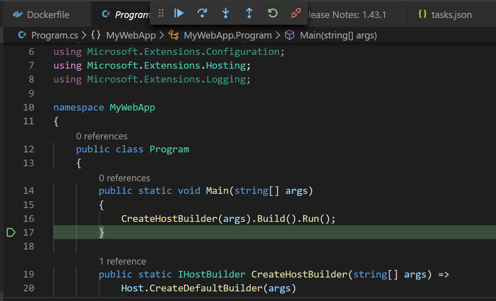

使用 Docker Compose
Docker Compose 提供了一种编排多个协同工作的容器的方式。例如，一个处理请求的服务与一个前端网站，或者一个使用 Redis 缓存等辅助功能的服务的场景。如果你在应用开发中使用微服务模型，可以使用 Docker Compose 将应用代码拆分为若干个独立运行的服务，通过 Web 请求进行通信。本文帮助你为应用启用 Docker Compose（无论是 Node.js、Python 还是 .NET），并帮助你在 Visual Studio Code 中为这些场景配置调试。
此外，对于单容器场景，使用 Docker Compose 可以提供与工具无关的配置，这是单个 Dockerfile 无法做到的。诸如容器的卷挂载、端口映射和环境变量等配置设置都可以在 docker-compose YML 文件中声明。
要在 VS Code 中使用容器工具扩展来使用 Docker Compose，你应该已经熟悉 Docker Compose 的基础知识。
将 Docker Compose 支持添加到项目中
如果你已经有一个或多个 Dockerfile，可以通过打开命令面板（kb(workbench.action.showCommands)）并使用容器：将 Docker Compose 文件添加到工作区命令来添加 Docker Compose 文件。按照提示操作即可。
你也可以在添加 Dockerfile 的同时向工作区添加 Docker Compose 文件，方法是打开命令面板（kb(workbench.action.showCommands)）并使用容器：将 Docker 文件添加到工作区命令。系统会询问你是否要添加 Docker Compose 文件。如果你想保留现有的 Dockerfile，请在提示是否覆盖 Dockerfile 时选择否。
容器工具扩展会将 docker-compose.yml 文件添加到你的工作区中。此文件包含按生产环境预期启动容器的配置。在某些情况下，还会生成一个 docker-compose.debug.yml 文件。此文件提供了一种简化模式用于启动调试器。

VS Code 容器工具扩展生成的文件可以开箱即用，但你也可以根据自己的场景进行自定义优化。然后，你可以使用容器：Compose Up 命令（右键点击 docker-compose.yml 文件，或在命令面板中找到该命令）一次性启动所有内容。你也可以在 VS Code 中的命令提示符或终端窗口中使用 docker-compose up 命令来启动容器。有关如何配置 Docker Compose 行为以及有哪些命令行选项可用，请参考 Docker Compose 文档。
有了 docker-compose 文件，你现在可以在 docker-compose 文件中指定端口映射，而不是在 .json 配置文件中。有关示例，请参阅 Docker Compose 文档。
提示：使用 Docker Compose 时，不要指定主机端口。相反，让 Docker 随机选择一个可用端口，以自动避免端口冲突问题。
向项目中添加新容器
如果你想添加另一个应用或服务，可以再次运行容器：将 Docker Compose 文件添加到工作区，并选择覆盖现有的 docker-compose 文件，但你会丢失这些文件中的所有自定义内容。如果你想保留对 compose 文件的更改，可以手动修改 docker-compose.yml 文件来添加新服务。通常，你可以复制现有的服务部分，粘贴以创建一个新条目，并根据新服务的需要修改名称。
你可以再次运行容器：将 Docker 文件添加到工作区命令来为新应用生成 Dockerfile。虽然每个应用或服务都有自己的 Dockerfile，但通常每个工作区只有一个 docker-compose.yml 和一个 docker-compose.debug.yml 文件。
在 Python 项目中，你的 Dockerfile、.dockerignore、docker-compose*.yml 文件都放在工作区的根文件夹中。当你添加另一个应用或服务时，将 Dockerfile 移到该应用的文件夹中。
在 Node.js 项目中，Dockerfile 和 .dockerignore 文件会放在该服务的 package.json 旁边。
对于 .NET，当你创建 Docker Compose 文件时，文件夹结构已经设置好可以处理多个项目。.dockerignore 和 docker-compose*.yml 放在工作区根目录中（例如，如果项目在 src/project1 中，则文件在 src 中），因此当你添加另一个服务时，你在某个文件夹中创建另一个项目（例如 project2），然后按上文所述重建或修改 docker-compose 文件。
调试
首先，请参考目标平台的调试文档，了解在 VS Code 中使用容器进行调试的基础知识：
如果你想在 Docker Compose 中进行调试，请使用上一节中描述的两种 Docker Compose 文件之一运行容器：Compose Up 命令，然后使用相应的附加启动配置进行附加。直接使用普通启动配置进行启动不会使用 Docker Compose。
创建一个附加启动配置。这是 launch.json 中的一个部分。这个过程大多是手动的，但在某些情况下，容器工具扩展可以通过添加一个预配置的启动配置来提供帮助，你可以将其用作模板并进行自定义。每种平台（Node.js、Python 和 .NET）的过程在以下各节中描述。
Node.js
- 在调试选项卡中，选择配置下拉菜单，选择新建配置并选择
Containers: Attach配置模板容器：附加到 Node。 - 在
docker-compose.debug.yml中配置调试端口。这在创建文件时已设置好，因此你可能不需要更改它。在下面的示例中，端口 9229 用于主机和容器上的调试。version: '3.4' services: node-hello: image: node-hello build: . environment: NODE_ENV: development ports: - 3000 - 9229:9229 command: node --inspect=0.0.0.0:9229 ./bin/www - 如果你有多个应用，你需要更改其中一些应用的端口，以便每个应用都有唯一的端口。你可以在
launch.json中指向正确的调试端口，并保存文件。如果你省略此项，端口将自动选择。
以下是一个显示 Node.js 启动配置 - 附加的示例：
"configurations": [
{
"type": "node",
"request": "attach",
"name": "Containers: Attach to Node",
"remoteRoot": "/usr/src/app",
"port": 9229 // 可选；否则从 docker-compose.debug.yml 推断。
},
// ...
]- 完成编辑附加配置后，保存
launch.json，并选择你的新启动配置作为活动配置。在调试选项卡中，在配置下拉菜单中找到新配置。

- 右键点击
docker-compose.debug.yml文件并选择Compose Up。 - 当你附加到一个公开 HTTP 端点并返回 HTML 的服务时，Web 浏览器不会自动打开。要在浏览器中打开应用，请在侧边栏中选择容器，右键点击并选择在浏览器中打开。如果配置了多个端口，系统会要求你选择端口。
- 以通常的方式启动调试器。从调试选项卡中，选择绿色箭头（开始按钮）或使用
kb(workbench.action.debug.start)。Python
要使用 Docker Compose 调试 Python，请按照以下步骤操作：
- 在调试选项卡中，选择配置下拉菜单，选择新建配置，选择Python 调试程序，然后选择
Remote Attach配置模板。

- 系统会提示你选择要用于调试的主机（例如 localhost）和端口。Python 的默认调试端口是 5678。如果你有多个应用，你需要更改其中之一的端口，以便每个应用都有唯一的端口。你可以在
launch.json中指向正确的调试端口，并保存文件。如果你省略此项，端口将自动选择。"configurations": [ { "name": "Python Debugger: Remote Attach", "type": "debugpy", "request": "attach", "port": 5678, "host": "localhost", "pathMappings": [ { "localRoot": "${workspaceFolder}", "remoteRoot": "/app" } ] } - 完成编辑附加配置后，保存
launch.json。导航到调试选项卡，并选择Python 调试程序：远程附加作为活动配置。 - 如果你已经有有效的 Dockerfile，我们建议运行容器：将 Docker Compose 文件添加到工作区命令。这将创建一个
docker-compose.yml文件以及一个docker-compose.debug.yml文件，后者会进行卷映射并在容器中启动 Python 调试器。如果你还没有 Dockerfile，我们建议运行容器：将 Docker 文件添加到工作区并选择是以包含 Docker Compose 文件。注意：默认情况下，使用容器：将 Docker 文件添加到工作区时，选择 Django 和 Flask 选项将搭建一个为 Gunicorn 配置的 Dockerfile。在继续之前，请按照 Python 容器快速入门 中的说明确保其正确配置。
- 右键点击
docker-compose.debug.yml文件（示例如下所示）并选择Compose Up。version: '3.4' services: pythonsamplevscodedjangotutorial: image: pythonsamplevscodedjangotutorial build: context: . dockerfile: ./Dockerfile command: ["sh", "-c", "pip install debugpy -t /tmp && python /tmp/debugpy --wait-for-client --listen 0.0.0.0:5678 manage.py runserver 0.0.0.0:8000 --nothreading --noreload"] ports: - 8000:8000 - 5678:5678 - 一旦容器构建完成并运行，选择Python 调试程序：远程附加启动配置后，按
kb(workbench.action.debug.start)来附加调试器。

注意： 如果你想将 Python 调试器导入到特定文件中，更多信息可在 debugpy 自述文件 中找到。
- 当你附加到一个公开 HTTP 端点并返回 HTML 的服务时，Web 浏览器可能不会自动打开。要在浏览器中打开应用，请在容器资源管理器中右键点击容器并选择在浏览器中打开。如果配置了多个端口，系统会要求你选择端口。

你现在正在容器中调试正在运行的应用程序。
.NET
- 在调试选项卡中，选择配置下拉菜单，选择新建配置并选择
Container Attach配置模板容器：.NET 附加（预览）。 - VS Code 会尝试使用默认路径将
vsdbg从主机复制到目标容器。你也可以在附加配置中提供现有vsdbg实例的路径。"netCore": { "debuggerPath": "/remote_debugger/vsdbg" } - 完成编辑附加配置后，保存
launch.json，并选择新启动配置作为活动配置。在调试选项卡中，在配置下拉菜单中找到新配置。 - 右键点击
docker-compose.debug.yml文件并选择Compose Up。 - 当你附加到一个公开 HTTP 端点并返回 HTML 的服务时，Web 浏览器不会自动打开。要在浏览器中打开应用，请在侧边栏中选择容器，右键点击并选择在浏览器中打开。如果配置了多个端口，系统会要求你选择端口。
- 以通常的方式启动调试器。从调试选项卡中，选择绿色箭头（开始按钮）或使用
kb(workbench.action.debug.start)。

- 如果你尝试附加到运行在容器中的 .NET 应用，你会看到一个提示，要求选择应用的容器。

要跳过此步骤，可以在 launch.json 的附加配置中指定容器名称：
"containerName": "你的容器名称" 接下来，系统会询问你是否要将调试器（vsdbg）复制到容器中。选择是。

如果一切配置正确，调试器应该会附加到你的 .NET 应用程序。

卷挂载
默认情况下，容器工具扩展不会为调试组件进行任何卷挂载。在 .NET 或 Node.js 中不需要这样做，因为所需的组件内置于运行时中。如果你的应用需要卷挂载，可以通过在 docker-compose*.yml 文件中使用 volumes 标签来指定。
volumes:
- /主机文件夹路径:/容器文件夹路径使用多个 Compose 文件的 Docker Compose
工作区可以有多个 docker-compose 文件来处理不同的环境，如开发、测试和生产。配置的内容可以拆分到多个文件中。例如，一个定义所有环境通用信息的基础 compose 文件，以及定义环境特定信息的单独覆盖文件。当这些文件作为 docker-compose 命令的输入传递时，它将这些文件合并成一个配置。默认情况下，容器：Compose Up 命令将单个文件作为输入传递给 compose 命令，但你可以使用命令自定义来自定义 compose up 命令以传递多个文件。或者，你也可以使用自定义任务以所需的参数调用 docker-compose 命令。
注意：如果你的工作区有docker-compose.yml和docker-compose.override.yml且没有其他 compose 文件，则docker-compose命令会在没有输入文件的情况下调用，并隐式使用这些文件。在这种情况下，不需要进行自定义。
命令自定义
命令自定义提供了多种方式，可以根据你的需求自定义 compose up 命令。以下是 compose up 命令的一些命令自定义示例。
基础文件和覆盖文件
假设你的工作区有一个基础 compose 文件（docker-compose.yml）和每个环境的覆盖文件（docker-compose.dev.yml、docker-compose.test.yml 和 docker-compose.prod.yml），并且你始终使用基础文件和一个覆盖文件来运行 docker compose up。在这种情况下，compose up 命令可以按照以下示例进行自定义。当调用 compose up 命令时，${configurationFile} 会被所选文件替换。
"docker.commands.composeUp": [
{
"label": "override",
"template": "docker-compose -f docker-compose.yml ${configurationFile} up -d --build",
}
]模板匹配
假设你为每个环境使用不同的输入文件集。你可以定义多个带有正则表达式匹配的模板，所选文件的名称将与 match 属性进行匹配，并使用相应的模板。
"containers.commands.composeUp": [
{
"label": "dev-match",
"template": "docker-compose -f docker-compose.yml -f docker-compose.debug.yml -f docker-compose.dev.yml up -d --build",
"match": "dev"
},
{
"label": "test-match",
"template": "docker-compose -f docker-compose.yml -f docker-compose.debug.yml -f docker-compose.test.yml up -d --build",
"match": "test"
},
{
"label": "prod-match",
"template": "docker-compose -f docker-compose.yml -f docker-compose.release.yml -f docker-compose.prod.yml up -d --build",
"match": "prod"
}
]在调用命令时选择模板
如果你从命令模板中省略了 match 属性，则每次调用 compose up 命令时，系统都会询问你要使用哪个模板。例如：
"containers.commands.composeUp": [
{
"label": "dev",
"template": "docker-compose -f docker-compose.yml -f docker-compose.common.dev.yml ${configurationFile} up -d --build"
},
{
"label": "test",
"template": "docker-compose -f docker-compose.yml -f docker-compose.common.test.yml ${configurationFile} up -d --build"
},
{
"label": "prod",
"template": "docker-compose -f docker-compose.yml -f docker-compose.common.prod.yml ${configurationFile} up -d --build"
},
],自定义任务
你也可以不通过命令自定义，而是定义像下面这样的任务来调用 docker-compose 命令。有关此选项的更多详细信息，请参考自定义任务。
{
"type": "shell",
"label": "compose-up-dev",
"command": "docker-compose -f docker-compose.yml -f docker-compose.Common.yml -f docker-compose.dev.yml up -d --build",
"presentation": {
"reveal": "always",
"panel": "new"
}
}